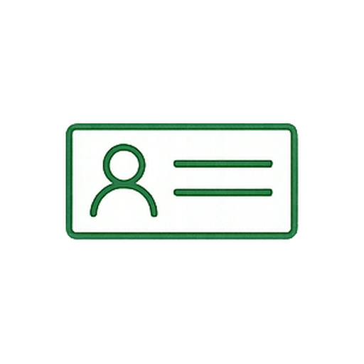

「給与が上がれば人は辞めない」── その時代は終わりました。
離職、メンタル不調、採用難。すべての根は同じ。
社員の"人生"を会社が支えられているか。これが、これからの経営の論点です。
採用しても3年以内に辞める。育成投資が、回収できないまま消えていく。
導入しているが、誰も使わない。「あって当然」になり、満足度に効かない。
休職、復職、再休職。誰にも相談できないまま、人生も会社も傷ついていく。
「うちだけじゃない」──
そう思っていませんか。
けれど、誰かが最初に変わらなければ、
この国の経営は、変わりません。
社員の人生をどう支えるか ── その答えは、まずビジネスマン自身が「人生のリスク」を見抜ける目を持つことです。 そのための知識基盤が、人生診断士という資格制度です。
健康・お金・キャリア・家族・働き方 ──
人生100年時代に潜む5領域のリスクを構造化して理解し、
社員一人ひとりの人生に向き合えるビジネスマンになる。
それは、社員の人生を語れる「ビジネスマンの言語」を獲得することです。
人生診断士の知見を活用し、社員と家族に専門相談を届ける福利厚生サービス。 資格取得と組み合わせて、はじめて真価を発揮します。
"人生"を漠然と語るのではなく、5つの領域に構造化して理解する ── それが、人生診断士の出発点です。
身体・メンタル・予防医療を経営視点で捉える。社員の不調の早期発見と対話設計。
給与の先にある"生涯収支"。年金・保険・資産形成をビジネスマンの言葉で語れるように。
20代～80代、各ライフステージのキャリア課題。社員の人生線で人事を考える視点。
育児・介護・配偶者・相続。家族リスクが仕事に与える影響を理解し、支える設計。
働くことの意味、生きがい、定年後の人生。一人ひとりに合う"働き方の地図"を描く。
採用・離職・育成のすべての根を「人生のリスク」から捉え直す。経営判断の解像度が変わります。
形骸化した福利厚生を、社員の人生に効く仕組みへ。Realize clubと組み合わせて運用可能。
"仕事の話"から"人生の話"へ、自然に踏み込める対話の引き出しを獲得します。
実際に学び、現場で活かしている方々から。
人生診断士の知見を活用し、社員と家族に専門相談を届ける福利厚生プログラム。 資格取得と組み合わせて運用することで、真価を発揮します。
お申込みから資格取得まで、オンライン中心でスムーズに進められます。

社員と「人生の話」ができるビジネスマンになりたい
離職率を、報酬以外のアプローチで下げたい
人生100年時代の経営判断軸を持ちたい
1on1や評価面談の言葉に、もう詰まりたくない
会社を、社員の人生を支える存在にしたい
同じ志のビジネスマンネットワークと繋がりたい
5領域を体系的に学び、社員の人生を語れるビジネスマンへ。 まずは無料の入門セミナーまたは個別相談からどうぞ。
▶ 取得を申し込む→取得後、学びを組織に届けたいビジネスマン向け。 社員と家族のための福利厚生プログラムです。
▶ Realize clubを相談 →